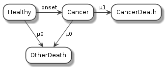

Examples for the microsimulation package
Table of Contents
1 Introduction
- Some examples in both R and C++.
2 Tick-tock model
2.1 R version
library(microsimulation, quietly=TRUE) tick_tock = setRefClass("tick_tock", contains="BaseDiscreteEventSimulation", methods=list( init = \() { cat("Started\n") scheduleAt(rexp(1,1), "tick") scheduleAt(rexp(1,0.1), "stop") }, handleMessage = \(msg) { cat(sprintf("Time: %f; event: %s\n", now(), msg)) switch(msg, tick=scheduleAt(now()+rexp(1), "tock"), tock=scheduleAt(now()+rexp(1), "tick"), clear()) }, final = \() {cat("Finished\n"); now()} )) set.seed(12345) sim = new("tick_tock") replicate(2, sim$run())
Started Time: 0.441808; event: tick Time: 1.250275; event: tock Time: 1.268724; event: tick Time: 1.724134; event: tock Time: 1.748072; event: tick Time: 5.274728; event: stop Finished Started Time: 1.257961; event: tick Time: 3.075964; event: tock Time: 3.302451; event: tick Time: 3.749214; event: tock Time: 5.001675; event: tick Time: 5.398762; event: tock Time: 5.486878; event: tick Time: 7.209042; event: tock Time: 9.621881; event: stop Finished [1] 5.274728 9.621881
2.2 C++ version
library(microsimulation, quietly=TRUE) sourceCpp(code=" // [[Rcpp::depends(microsimulation)]] #include <microsimulation.h> using namespace ssim; // define a process class tick_tock : public cProcess { public: double finish_time; // initialise the simulation void init() { Rprintf(\"Started\\n\"); scheduleAt(R::rexp(1.0), \"tick\"); scheduleAt(R::rexp(10.0), \"stop\"); } // handle the messages void handleMessage(const cMessage* msg) { Rprintf(\"Time: %f; event: %s\\n\", now(), msg->name.c_str()); msg->name == \"tick\" ? scheduleAt(now()+R::rexp(1.0), \"tock\") : msg->name == \"tock\" ? scheduleAt(now()+R::rexp(1.0), \"tick\") : Sim::stop_process(); } void stop() { finish_time = now(); Rprintf(\"Finished\\n\"); } }; // Exported function: Run the simulation once and return the finish time // [[Rcpp::export]] double call_tick_tock() { tick_tock sim; Sim::create_process(&sim); Sim::run_simulation(); Sim::clear(); return sim.finish_time; }") set.seed(12345) replicate(2, call_tick_tock())
Started Time: 0.441808; event: tick Time: 1.250275; event: tock Time: 1.268724; event: tick Time: 1.724134; event: tock Time: 1.748072; event: tick Time: 5.274728; event: stop Finished Started Time: 1.257961; event: tick Time: 3.075964; event: tock Time: 3.302451; event: tick Time: 3.749214; event: tock Time: 5.001675; event: tick Time: 5.398762; event: tock Time: 5.486878; event: tick Time: 7.209042; event: tock Time: 9.621881; event: stop Finished [1] 5.274728 9.621881
3 Illness-death model
3.1 R version
library(microsimulation, quietly=TRUE) illness_death = setRefClass("illness_death", contains="BaseDiscreteEventSimulation", fields=list(utility="numeric", QALY="numeric"), methods=list( init = \() { cat("Individual:\n") QALY <<- 0.0 toHealthy() }, toHealthy = \() { utility <<- 0.95 scheduleAt(now()+rexp(1,1/30.0), "onset") scheduleAt(now()+rexp(1,1/60.0), "death") }, toIllness = \() { utility <<- 0.95*0.8 scheduleAt(now()+rexp(1,1/5.0), "recovered") scheduleAt(now()+rexp(1,1/10.0), "death") }, handleMessage = \(msg) { cat(sprintf("Time: %f; event: %s\n", now(), msg)) QALY <<- QALY + (now() - previous()) * utility clear() if (msg == "onset") toHealthy() else if (msg == "recovered") toIllness() else clear() })) set.seed(12345) sim = new("illness_death") replicate(5, {sim$run(); sim$QALY})
Individual: Time: 13.254234; event: onset Time: 14.361154; event: death Individual: Time: 1.436288; event: death Individual: Time: 75.477631; event: death Individual: Time: 28.865643; event: onset Time: 35.660268; event: onset Time: 59.485505; event: death Individual: Time: 2.643472; event: onset Time: 115.923108; event: death [1] 13.643096 1.364474 71.703750 56.511229 110.126952
3.2 C++ version
library(microsimulation, quietly=TRUE) sourceCpp(code=" // [[Rcpp::depends(microsimulation)]] #include <microsimulation.h> using namespace ssim; // define a process class illness_death : public cProcess { public: double QALY, utility; // initialise the simulation void init() { Rprintf(\"Individual:\\n\"); QALY = 0.0; this->toHealthy(); } void toHealthy() { utility = 0.95; this->scheduleAt(now()+R::rexp(30.0), \"onset\"); this->scheduleAt(now()+R::rexp(60.0), \"death\"); } void toIllness() { utility = 0.95*0.8; this->scheduleAt(now()+R::rexp(5.0), \"recovered\"); this->scheduleAt(now()+R::rexp(10.0), \"death\"); } // handle the messages void handleMessage(const cMessage* msg) { Rprintf(\"Time: %f; event: %s\\n\", now(), msg->name.c_str()); QALY += (now() - previous()) * utility; this->cancel_events(); // in this case, we cancel all of the competing events if (msg->name == \"onset\") toHealthy(); else if (msg->name == \"recovered\") toIllness(); else Sim::stop_process(); } }; // Exported function: Run the simulation once // [[Rcpp::export]] double call_illness_death() { illness_death sim; Sim::create_process(&sim); Sim::run_simulation(); Sim::clear(); return sim.QALY; }") set.seed(12345) replicate(5, call_illness_death())
Individual: Time: 13.254234; event: onset Time: 14.361154; event: death Individual: Time: 1.436288; event: death Individual: Time: 75.477631; event: death Individual: Time: 28.865643; event: onset Time: 35.660268; event: onset Time: 59.485505; event: death Individual: Time: 2.643472; event: onset Time: 115.923108; event: death [1] 13.643096 1.364474 71.703750 56.511229 110.126952
4 Reporting using a data-frame

4.1 R version
library(ascii) options(asciiType="org") library(microsimulation, quietly=TRUE) simple_person = setRefClass("simple_person", contains="BaseDiscreteEventSimulation", fields=list(id="numeric", state="character", report="data.frame"), methods=list( initialize = \() {id <<- -1L}, init = \() { id <<- id + 1L state <<- "Healthy" scheduleAt(rweibull(1,8,85), "toOtherDeath") scheduleAt(rweibull(1,3,90), "toCancer") }, handleMessage = \(msg) { report <<- dplyr::bind_rows(report, data.frame(id=id, startTime=previous(), endTime=now(), state=state, event=msg)) if (msg == "toCancer") { state <<- "Cancer" if (runif(1)<0.5) scheduleAt(now()+rweibull(1,2,10), "toCancerDeath") } else clear() })) set.seed(12345) sim = new("simple_person") for (i in 1:5) sim$run() ascii(sim$report)
| id | startTime | endTime | state | event | |
|---|---|---|---|---|---|
| 1 | 0.00 | 0.00 | 45.90 | Healthy | toCancer |
| 2 | 0.00 | 45.90 | 73.92 | Cancer | toOtherDeath |
| 3 | 1.00 | 0.00 | 65.27 | Healthy | toOtherDeath |
| 4 | 2.00 | 0.00 | 91.44 | Healthy | toOtherDeath |
| 5 | 3.00 | 0.00 | 61.42 | Healthy | toCancer |
| 6 | 3.00 | 61.42 | 80.92 | Cancer | toOtherDeath |
| 7 | 4.00 | 0.00 | 98.92 | Healthy | toOtherDeath |
4.2 C++ version
sourceCpp(code = " // [[Rcpp::depends(microsimulation)]] #include <microsimulation.h> // utility to make a factor Rcpp::IntegerVector make_factor(std::vector<int> v, Rcpp::CharacterVector levels) { Rcpp::IntegerVector f(v.size()); std::transform(v.begin(), v.end(), f.begin(), [](int i) {return 1+i; }); f.attr(\"class\") = \"factor\"; f.attr(\"levels\") = levels; return f; } enum state_t {Healthy,Cancer,Death}; enum event_t {toOtherDeath, toCancer, toCancerDeath}; class SimplePerson : public ssim::cProcess { public: int id; state_t state; std::vector<double> startTimes, endTimes; std::vector<int> states, events, ids; SimplePerson() : id(-1) {}; void handleMessage(const ssim::cMessage*); void init(); }; /** Initialise a simulation run for an individual */ void SimplePerson::init() { id++; state = Healthy; double tm = R::rweibull(8.0,85.0); this->scheduleAt(tm,toOtherDeath); this->scheduleAt(R::rweibull(3.0,90.0),toCancer); } /** Handle receiving self-messages */ void SimplePerson::handleMessage(const ssim::cMessage* msg) { ids.push_back(id); startTimes.push_back(this->previous()); endTimes.push_back(ssim::now()); states.push_back(state); events.push_back(msg->kind); switch(msg->kind) { case toOtherDeath: case toCancerDeath: ssim::Sim::stop_process(); break; case toCancer: state = Cancer; if (R::runif(0.0,1.0) < 0.5) this->scheduleAt(ssim::now() + R::rweibull(2.0,10.0), toCancerDeath); break; default: REprintf(\"No valid kind of event\\n\"); break; } // switch } // handleMessage() // [[Rcpp::export]] Rcpp::DataFrame callSimplePersonB(int n = 5) { SimplePerson person; for (int i = 0; i < n; i++) { ssim::Sim::create_process(&person); ssim::Sim::run_simulation(); ssim::Sim::clear(); } Rcpp::DataFrame df; df.push_back(person.ids,\"id\"); df.push_back(person.startTimes,\"startTime\"); df.push_back(person.endTimes,\"endTime\"); df.push_back(make_factor(person.states,{\"Healthy\",\"Ill\",\"Dead\"}), \"state\"); df.push_back(make_factor(person.events,{\"toOtherDeath\", \"toCancer\", \"toCancerDeath\"}), \"event\"); return Rcpp::wrap(df); } ") set.seed(12345) callSimplePersonB() |> ascii()
| id | startTime | endTime | state | event | |
|---|---|---|---|---|---|
| 1 | 0.00 | 0.00 | 45.90 | Healthy | toCancer |
| 2 | 0.00 | 45.90 | 73.92 | Ill | toOtherDeath |
| 3 | 1.00 | 0.00 | 65.27 | Healthy | toOtherDeath |
| 4 | 2.00 | 0.00 | 91.44 | Healthy | toOtherDeath |
| 5 | 3.00 | 0.00 | 61.42 | Healthy | toCancer |
| 6 | 3.00 | 61.42 | 80.92 | Ill | toOtherDeath |
| 7 | 4.00 | 0.00 | 98.92 | Healthy | toOtherDeath |
4.3 Benchmark comparing R and C++
microbenchmark::microbenchmark({
set.seed(12345)
sim = new("simple_person")
for (i in 1:100) sim$run()
}, {
set.seed(12345)
callSimplePersonB(100)
},
times=100) |> summary() |> ascii()
| expr | min | lq | mean | median | uq | max | neval | cld | |
|---|---|---|---|---|---|---|---|---|---|
| 1 | { set.seed(12345) sim = new("simpleperson") for (i in 1:100) sim$run() } | 103633.14 | 105178.55 | 107210.69 | 106973.50 | 108041.16 | 123989.27 | 100.00 | b |
| 2 | { set.seed(12345) callSimplePersonB(100) } | 999.64 | 1041.84 | 1112.25 | 1081.29 | 1117.74 | 3342.04 | 100.00 | a |
4.4 C++ using an EventReport
library(microsimulation) sourceCpp(code = " // [[Rcpp::depends(microsimulation)]] #include <microsimulation.h> #include <numeric> enum state_t {Healthy,Cancer,Death}; enum event_t {toOtherDeath, toCancer, toCancerDeath}; using Report = ssim::EventReport<short,short,double>; class SimplePerson : public ssim::cProcess { public: state_t state; Report report; SimplePerson() { } void handleMessage(const ssim::cMessage*); void init(); }; /** Initialise a simulation run for an individual */ void SimplePerson::init() { state = Healthy; double tm = R::rweibull(8.0,85.0); this->scheduleAt(tm,toOtherDeath); this->scheduleAt(R::rweibull(3.0,90.0),toCancer); } /** Handle receiving self-messages */ void SimplePerson::handleMessage(const ssim::cMessage* msg) { report.add(state,msg->kind,previous(),ssim::now()); switch(msg->kind) { case toOtherDeath: case toCancerDeath: ssim::Sim::stop_process(); break; case toCancer: state = Cancer; if (R::runif(0.0,1.0) < 0.5) this->scheduleAt(ssim::now() + R::rweibull(2.0,10.0), toCancerDeath); break; default: REprintf(\"No valid kind of event\\n\"); break; } // switch } // handleMessage() // [[Rcpp::export]] SEXP callSimplePersonC(int n = 10000) { SimplePerson person; for (int i = 0; i < n; i++) { ssim::Sim::create_process(&person); ssim::Sim::run_simulation(); ssim::Sim::clear(); } return person.report.wrap(); } ") make_factor = function(x, labels) factor(as.integer(x)+1L,labels=labels) set.seed(12345) report = callSimplePersonC() rates = with(report, merge(pt,events,all.x=TRUE) |> transform(rate=ifelse(is.na(number),0,number)/pt)) |> transform(Key=make_factor(Key,c("Healthy","Cancer")), event=make_factor(event,c("toOtherDeath", "toCancer", "toCancerDeath"))) lattice::xyplot(rate~age|Key+event, data=rates, type="l")